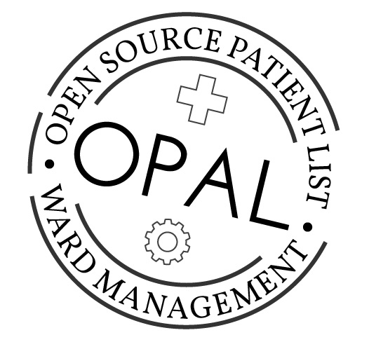

OPAL
Improves efficiency & patient safety while solving the right problems - the ones that exist in real life hospitals.
Improves efficiency & patient safety while solving the right problems - the ones that exist in real life hospitals.
Helps health workers get access to the right information quickly & easily.
Running hackdays to help people understand some alternative models for problem solving & procurement within health tech
Building APIs and visualisation tools to let people ask their own questions about data.

Informs & educates the public about evidence based decision making.

Using open data to identify points at which we can optimise the healthcare system.